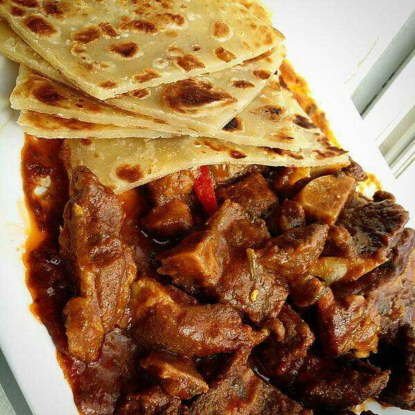

Chapati Beef

Description
Chapati is a staple in East Africa and was influenced by the wave of Indian immigrants, who have, for instance, integrated into forming the Indian community of Tanzania. Indian influence on Africa, particularly Kenyan food, has always been apparent, with the invention of dishes like biriyani (a spiced rice dish) and the introduction of new spices to the local cuisine.
From using indigenous ingredients to incorporating spices in their cooking, East African cuisine has always been a delightful mix of local traditions with a touch of Indian flavors.
Ingredients
for beef stew
- vegetable oil
- 1 large onion (chopped)
- 1 kg beef (cubed)
- 4 cloves garlic(sliced)
- 2 tomatoes
- 2 small carrots(chopped))
- 1 potato(cubed)
- 1/2 a tea spoon salt
for chapati
- 140g plain flour, plus extra for dusting.
1 teaspoon salt
- 2 tablespoon olive oil, plus extra for greasing.
- 180ml hot water or as needed.
Instructions
Beef stew
- Cut the onion, tomato, carrot, potato, and beef into average hunks.
- Next, pile on the ginger and garlic.
- Now, add the carrots, potatoes, and tomatoes.
- Season with salt.
- Simmer uncovered until thick and pasty and all broth has reduced away. leave for about an hour.
Chapati
- In a large bowl, stir together the flours and salt. Use a wooden spoon to stir in the olive oil and enough water to make a soft dough that is elastic but not sticky.
- Knead the dough on a lightly floured surface for 5-10 mins until it is smooth. Divide into 10 pieces, or less if you want bigger breads. Roll each piece into a ball. Let rest for a few mins.
- Heat a frying pan over medium heat until hot, and grease lightly. On a lightly floured surface, use a floured rolling pin to roll out the balls of dough until very thin like a tortilla.
- When the pan starts smoking, put a chapati on it. Cook until the underside has brown spots, about 30 seconds, then flip and cook on the other side. Put on a plate and keep warm while you cook the rest of the chapatis.
Serve the chapati's and the beef stew and enjoy while still warm